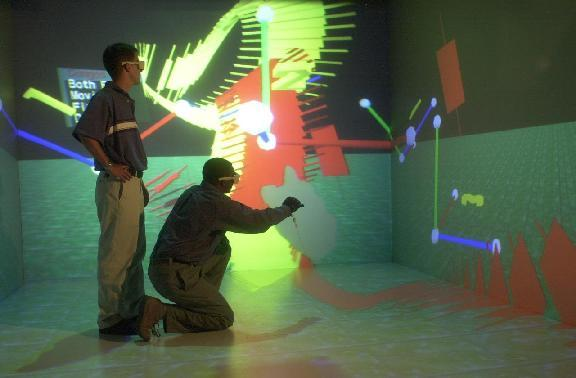
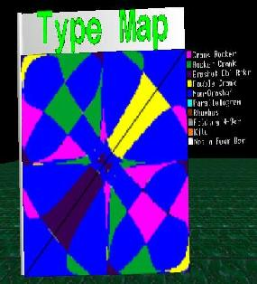
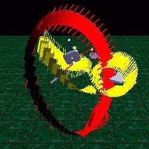

VRNETS: SPATIAL MECHANISM DESIGN IN VIRTUAL REALITY WITH NETWORKING

Collaboration in a Virtual Environment
OVERVIEW
VRNETS was developed as a software package for designing 4C spatial mechanisms in a virtual environment with networking. The software was developed at Iowa State University by John Kihonge, a graduate research assistant, working with Dr. Judy Vance. The project was funded by the National Science Foundation.
Spatial 4C mechanisms are composed of four links and four cylindrical joints (CCCC) and provide motion in a three-dimensional (3D) space. A spatial mechanism can be designed to move a rigid body through a finite sequence of prescribed locations in space. Four positions and orientations are prescribed and kinematics synthesis is performed to obtain a set of solution for the size and orientation of possible links of the mechanisms.
VRNETS uses computation routines from SPADES, a monitor-based spatial mechanism software developed by Dr. Pierre Larochelle at Florida Institute of Technology . VRNETS was developed using object-oriented C++ programming on SGI IRIX (UNIX-based) platform. The virtual environment and networking is developed using the WorldToolKit (WTK), WTK Immersive Display Option (WTKIDO) and World2World software. VRNETS was designed for display in Iowa State University's C2 facility (a CAVE-based virtual environment).
At Iowa State University, prior virtual reality design environemnt for spatial mechanism design has focussed on spherical mechanisms. Scott Osborn, a graduate student working with Dr. Judy Vance, developed SphereVR as a virtual environment for the design of spherical mechanisms. Next, Juliet Kraal, another graduate student assistant at Iowa State University, developed VEMECS (Virtual Environment MEChanism Synthesis) . Todd Furlong, another graduate assistant at Iowa State University, developed Isis (Interactive Synthesis of Spherical Mechanisms) .
INTERACTION and MENUS
Interaction is performed using Fakespace PINCH Glove. The PINCH Glove has a conductive material placed on the finger tips, thumb and palm of the glove to register contact between a user's fingers, palm and thumb. PINCH Gloves are more natural than a 3D mouse and they can be used for a wide range of gestures. To represent a user's hand in the virtual environment, a digital hand model is loaded and the virtual hand is animated by rearranging the joints of the model to preprogrammed configurations.Menus are used to provide more options for interaction with the VR environment. The menus are 3D objects consisting of a menu bar and text items. The main menu can be opened at any time during the design process. A menu bar can be repositioned in space, allowing the user to move the menu to a location in the virtual environment that is convenient.
Fakespace PINCH Glove
| VRNETS Menu
| |
|---|
POSITION SYNTHESIS AND NETWORKING
After four positions are specified, the user synthesizes all possible mechanisms for the four positions specified and displays the results in the form desired. The results are presented as either a type map or congruences. A type map is a 2D color-coded plot of the types of the mechanism representing the solutions for the problem specified. Spatial mechanisms are classified according to the mechanism type of their corresponding spherical image. The spherical image is a spherical four-bar mechanism with link lengths equal to the angular twist of the links of the spatial 4C mechanism. Moving and/or fixed congruences can be drawn. The moving congruences represent the driving dyad choices and the fixed congruencies represent the driven dyad choices. The moving and fixed congruences are drawn in yellow and red colors, respectively
A mechanism can been chosen from the type map or from the congruences and animated to verify if it completes the task required. The user can observe the motion of the mechanism to see whether the mechanism collides with objects in the virtual space and whether it goes through the positions in the required order. After getting a desirable mechanism, an output file of the mechanism generated can be saved by selecting "Save Mechanism" option from the File menu.
|  |
|  |
VRNETS sends position translations and rotations, and mechanism link lengths, translations and rotations over the network to other users. Only one of the users in the VR network is allowed to input the initial position information and to design a mechanism. The position information will be sent out to the simulation server and the other users will get the update for the position and the designed mechanism. The update for the position and mechanism data is done as soon as a change is made and the other users see the changes as they happen. However, the networking system speed will determine how fast the changes are received by the other users. After the mechanism has been designed, any of the users can animate the mechanism using the PINCH Glove and the menu interactions. The animation data is sent to all the users and they will see the mechanism animated in their VR environment.
PUBLICATIONS
Kihonge, John N., Larochelle, Pierre M., and Vance, Judy M.," Spatial Mechanism Design in Virtual Reality with Networking ," ASME 2001 Design Engineering Technical Conferences, September 9-12, Pittsburgh, Pennsylvania.
Kihonge, John N., Spatial Mechanism Design in Virtual Reality with Networking , Master's Thesis Defense, July 13, 2000.
PERSONNEL
Dr. Pierre Larochelle, Professor, Florida Institute of Technology
John N. Kihonge, Graduate Research Assistant, Iowa State University
FUNDING
This project was funded by the National Science Foundation Grant # DMI-9872604. Spatial Mechanism Design in a Virtual Environment
FACILITIES
Mechanical Engineering | VRAC | ISU | Home | E-mail | Previous